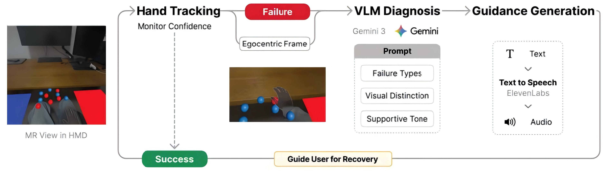

Contextual Recovery: Guiding Hand Tracking Failures Recovery in Mixed Reality via VLM Reasoning
Yi ZOU, Ziming LI, Hai-Ning LIANG, Zhiming Hu,
Proceedings of the 2026 IEEE Conference on Virtual Reality and 3D User Interfaces Abstracts and Workshops, 2026: 368-372.

Abstract
Robust hand tracking is essential to natural interaction in Mixed Reality (MR), yet it remains highly susceptible due to the limitations of tracking systems in Head-Mounted Displays (HMDs). Typical inside-out tracking systems fail in various context conditions, including occlusion from interaction and low light condition. Traditional methods for handling failure are often hard-coded for specific failure types using deterministic algorithms, limiting their ability to handle complex real-world settings. While recent research has introduced "early warning" systems to visualize tracking confidence and alert users to potential failures, these approaches are fundamentally passive and do not explain why or how to rectify the issue. In this paper, we introduce a context-aware recovery framework that leverages the semantic reasoning capabilities of Vision-Language Models (VLMs) to interpret various types of tracking failure and generate actionable guidance for recovery. The pipeline monitors tracking confidence to trigger VLM-based diagnosis, analyzing the user's egocentric view to identify the cause and generate actionable guidance. Crucially, this system generalizes across frequent failure modes through structured contextual prompting that grounds the VLM's reasoning with visual features of physical environment. Results from user study show high perceived utility and a strong subjective preference for the guidance compared to baseline method, indicating the system's potential to improve task proficiency.Links
BibTeX
@inproceedings{zou26cr,
title = {Contextual Recovery: Guiding Hand Tracking Failures Recovery in Mixed Reality via VLM Reasoning},
author = {Zou, Yi and Li, Ziming and Liang, Hai-Ning and Hu, Zhiming},
year = {2026},
booktitle = {Proceedings of the 2026 IEEE Conference on Virtual Reality and 3D User Interfaces Abstracts and Workshops},
pages = {368--372}}